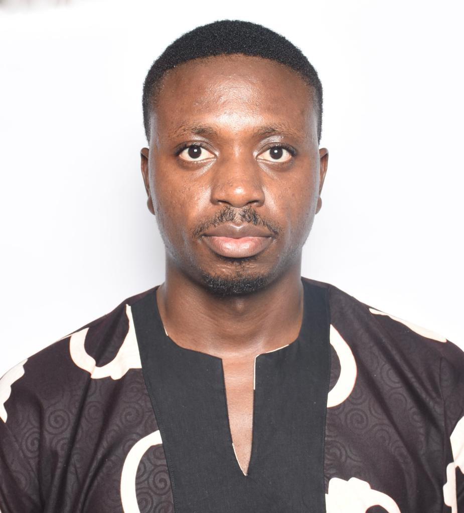

About Daniel
Adah Daniel Adoyi is a graduate of geologist from the prestigious University of Jos, Plateau State Nigeria. He is
a computer enthusiast who is a student at ALTSchool Africa. He is a skilled graphics
designer and web developer that is so passionate about the making a difference and creating employment through
the utilization of the tech ecosystem to promote Certain aspects of the Sustainable Development Goals (SDG's) such as
Information communications and Technology.
Also, my aims and objectives of partiicipating in this course at ALTSchool is to gain the revelant skills in the tech
ecosystem to create self improvement opportunities and impact my immediate community by creating employment and revenue
generation.